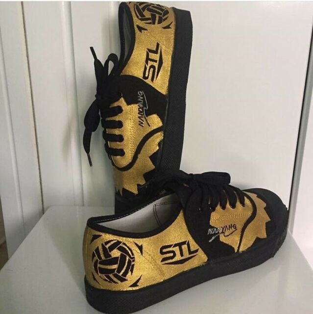

MY FAVORITE JOYS IN MY LIFE
ICT 11 - UBUNTU
Hi, I'm John Mike
Verdeblanco
Hi, I’m John Mike Verdeblanco from Magsaysay
Antipas North Cotabato.
Currently enrolled at Antipas National
High School, Learning and develop my skills in various
Aspects of information and communication technology.
Whether
It’s coding, web development or network administration with
A strong foundation and a bright future ahead,
I aim to make a
Significant contribution to the field of ICT.
MY FAVORITE
SPORTS
Takraw, my beloved sports,
where agility meets precision. The exhilarating kicks, gravity defying spikes, and teamwork
fuel my passion. Every moment on the court brings me pure joy and a rush of adrenaline
“Takraw Forever”

PROGRAMMING
Programming is my passion and creative outlet. Lines of code intertwine, forming solutions and bringing ideas to life. Each challenge sparks my curiosity, and every success fuels my drive.
“Programming, My endless fascination”
PET
German shepherd is my favorite pet and I have one his name is Hunter, Hunter is my loyal German K9 companion, a symbol of protection.

PIZZA
Pizza is a culinary masterpiece that never fails
to delight my taste buds. Its thin, crispy crust, oozing with savory tomato sauce and melted cheese, creates a symphony of flavors. Topped with a medley of ingredients like pepperoni, mushrooms, and olives, each bite is a perfect balance of satisfaction and indulgence.
Pure bliss on a plate.

SHOES
Takraw shoes, my trusted companions on the court, provide the perfect blend of comfort and grip. With their lightweight design and specialized sole, they enhance my performance in the exhilarating game of Sepak Takraw.
These shoes empower me to jump, kick, and spike with confidence, making them my
favorite sporting gear.
.jpg)
FRUIT
Mango, the epitome of tropical delight, is my ultimate fruit obsession. Its succulent flesh, bursting with sweet and tangy flavors, sends my taste buds into a frenzy. Whether eaten fresh, blended into a refreshing smoothie, or used in tantalizing desserts, the mango's juiciness and vibrant taste make it an irresistible treat.